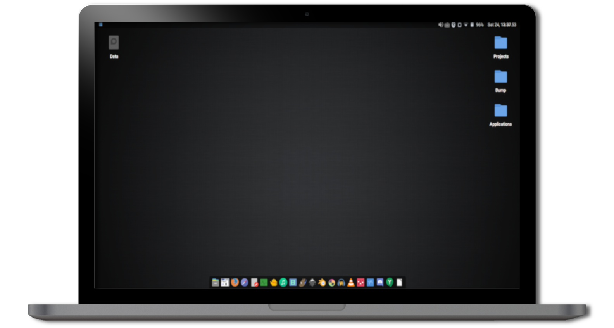
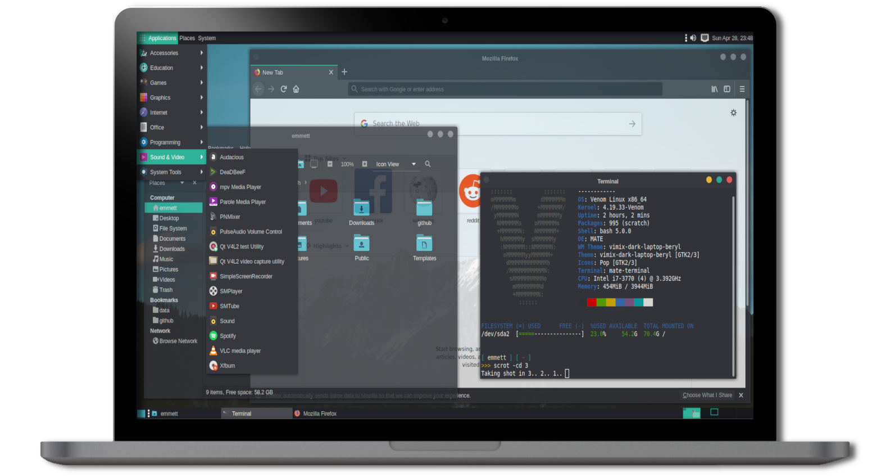
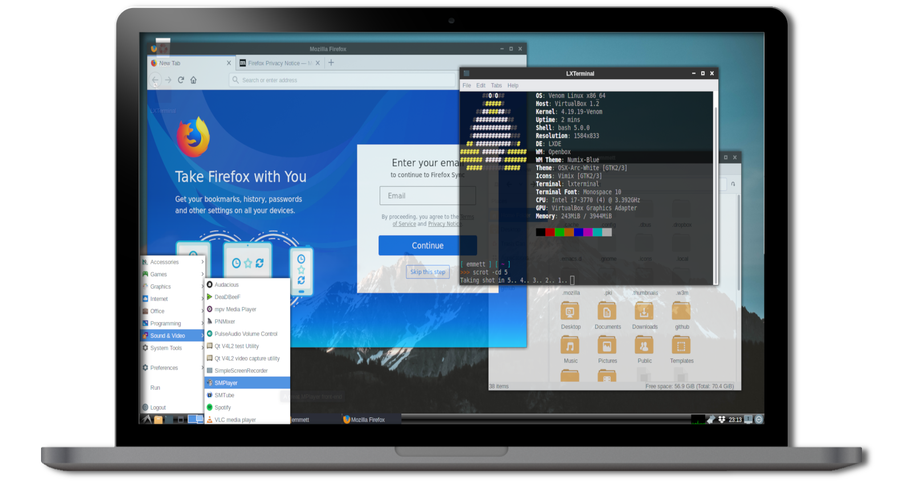

Select Your Flavour of Venom Linux
Xfce4
Xfce is a lightweight desktop environment for UNIX-like operating systems. It aims to be fast and low on system resources, while still being visually appealing and user friendly.
Mate
The MATE Desktop Environment is the continuation of GNOME 2. It provides an intuitive and attractive desktop environment using traditional metaphors for Linux and other Unix-like operating systems.
Lxde
LXDE is a free desktop environment with comparatively low resource requirements. This makes it especially suitable for use on older or resource-constrained personal computers such as netbooks or system on a chip computers
